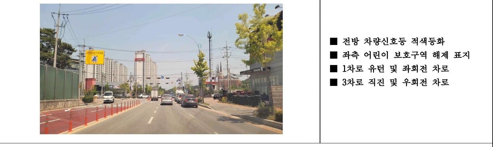

697. 在下列情况下，最安全的两种驾驶方法是？

- ①由于前方车辆信号灯为红色，因此应在停止线前提前减速并安全停车。
- ②左前方有儿童保护区域解除标志，因此在目前行驶的道路上无需特别注意儿童的安全。
- ③准备左转时，仔细观察在第一车道行驶的后方车辆，并安全变道。
- ④准备右转时，避开在第三车道等信号灯的车辆，通过人行道右转。
- ⑤道路右侧的黄色实线是允许临时停车但禁止长时间停车的标志，因此可以暂时停车。
查看答案
答案
① 由于前方车辆信号灯为红色，因此应在停止线前提前减速并安全停车。
③ 准备左转时，仔细观察在第一车道行驶的后方车辆，并安全变道。
依据
如果前方红灯，请提前减速并在路口前安全停车。如果想向左变道，开车前必须检查后方左侧车道是否有车辆行驶。如果有儿童保护区取消标志，则到该标志为止仍属于儿童保护区。由于第3车道是直行及右转车道，所以最好停在后面，等到有空间再右转。道路右侧的黄实线表示禁止停车区，因此也禁止停车。
依据文字为学习用机器翻译。